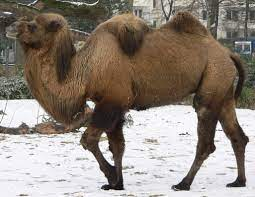

This week we have:
The four llamas and two camels are camelids. Camelids tend to be large and are strictly herbivorous. Camelids differ from ruminants in several ways. They have a three-chambered rather than a four-chambered digestive tract; an upper lip that is split in two with eat part seperately mobile, and an isolated incisor in the upper jaw. They have long legs that, because they lack tensor skin to bridge between thigh and body, they look longer still. (from Wikipedia)
A table comparing Camels and Llamas
|  | Camelid Comparison |
|||||||||
| # of Humps | Indigenous Region | Spits? | Produces Wool? | |||||||
| Camels(bacteria) | 2 | Africa/Asia | Llama | Llama | ||||||
| Llamas | 1 | Andes Mountain | ||||||||